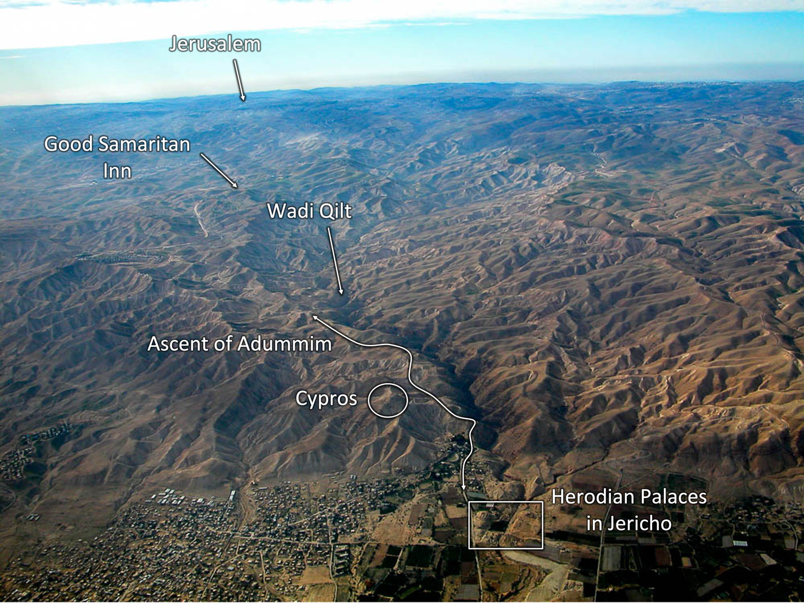
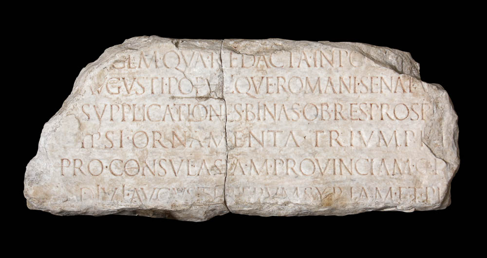
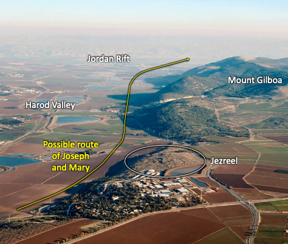
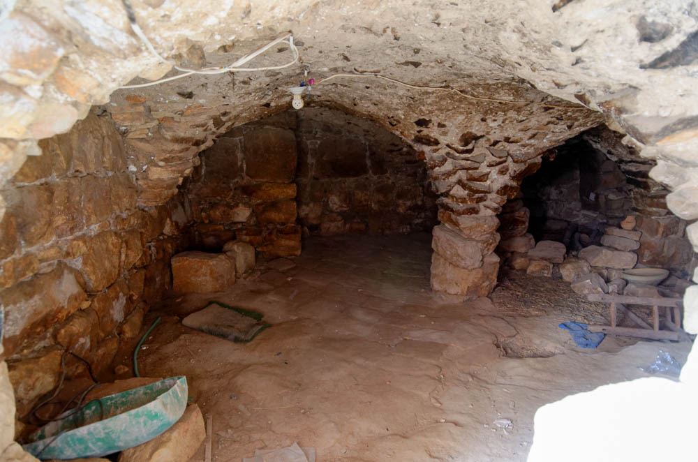
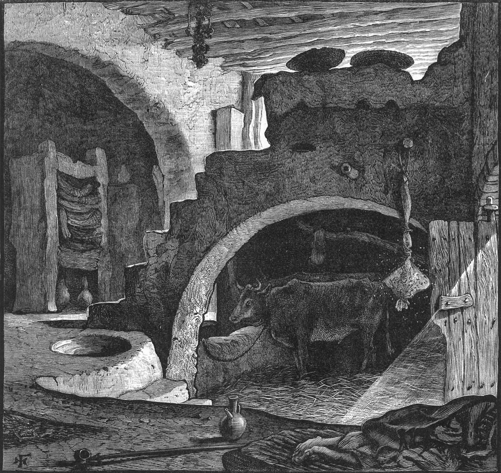
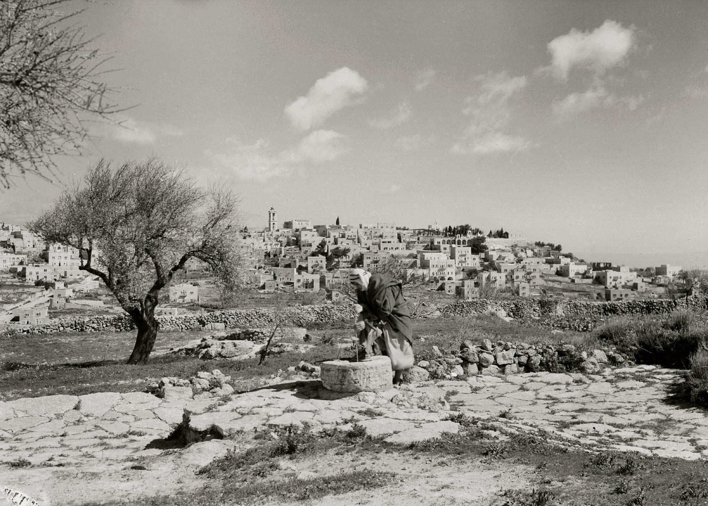
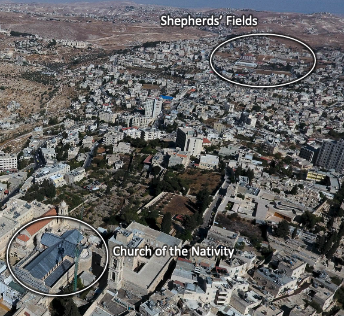

Nativity II - Luke 2:1-38
Table of Contents
Read/hear the portions: Luke 2:1-38
Summary
In NATIVITY part II, Joseph and Mary must travel to Bethlehem to take part in a census. Five miles from Jerusalem, Bethlehem serves as the birthplace of David and King Messiah. Close by at Migdal Eder, a group of shepherds is startled by an angel who announces the birth of the Messiah. The new family makes their first trip to the Temple in Jerusalem, where they encounter a holy man and a prophetess.
Videos
Luke 2:1-20:
Luke 2:21-38:
Bethlehem Supplement:
Following the Messiah:
Geographic Setting:
Luke 2 is our first encounter where geography plays a significant supporting role in our understanding of the Gospels. In just about every remaining chapter in the Gospels, we will want to pause to understand the geographic background.
This satellite photo shows two possible travel routes from Nazareth to Bethlehem1. The more direct route would take them through Samaria along the Way of the Patriarchs. In other words, this is the same road that Abraham and Jacob traveled frequently. It’s about 70 miles to Jerusalem going this way. While we’re often taught that Jews and Samaritans avoided each other at all costs, it was not unheard of for Jews to use this road. Luke doesn’t tell us which way they traveled, but we know Jesus traveled the shorter route on at least one occasion in John 4.
The way around would take travelers from Galilee, through the Jezreel valley, around Mt. Gilboa, where they would follow the Jordan down to Jericho. At Jericho, they would hang a right to make the grueling climb along the Ascent of Adummim up to Jerusalem. The photo below shows the climb from 800-1200 feet below sea level at Jericho (depending on where you measure) to 2500 feet above at Jerusalem.2 Going in this direction added an extra 20 miles to the journey and required fording the Jordan a couple of times. We know for sure Jesus traveled this way as He made His way up to Jerusalem for the final time of His earthly ministry after he met with Zacchaeus and Bartimaeus in Jericho.
There are several examples Luke paints a very different picture of “the Christmas story” than many of us have grown up with. We call these “Christmyth Busters.”
Christmyth: A December birth for Jesus is unlikely.
One large problem with assuming a December birth is that the dirt roads would have been nearly impassable in early winter because of the snow, rain, and mud. If we assume they took the long route along the Jordan – ~90 miles, the Jordan river would have been swollen and the banks flooded. In short, it is unlikely that a roman administrator in his right mind would have conducted a census at this time of year (think of the alps in Italy and the mountains in Turkey). To be fair, not all Roman emperors were in their right minds although that charge has never been leveled against Augustus.
As we mentioned in Annunciations, there is strong tradition to suggest John the Baptist was born in the spring, which means Jesus would have been borm six months later in the early fall.
| Luke 2:1-3 | References |
|---|---|
| In those days, a decree went out from Caesar Augustus that all the world should be registered. This was the first registration when Quirinius was governor of Syria. And all went to be registered, each to his own town. | Act 5:37 After him Judas the Galilean rose up in the days of the census and drew away some of the people after him. He too perished, and all who followed him were scattered. |
While Matthew gives us only a brief overview regarding Jesus’ actual birth – remember his only mention was in Matthew 1:24; everything after that verse is AFTER his birth – Luke will give us a lot more detail. We said in Luke 1 that Luke’s intent is to give us an orderly account. Luke is focused on who Jesus was, so we’re going to get a lot of detail about the human side of Jesus.
Scholars and skeptics have a problem with Luke’s dating of the Quirinius census to AD 6, which would have been way too late to have occurred at the time of Jesus’ birth. King Herod died in 4 BC, so Jesus’ birth had to be before Herod’s death. The problem is we have no historical evidence of a census that occurred during the later stages of Herod’s life. We must remember that “absence of evidence is not evidence of absence.” This is the fallacy the skeptics are engaging in with their argument. They’re assuming Luke made an error, for which we similarly have no evidence.
From the Bible itself, Acts 5:37 tells us that Luke knew exactly when the AD6 census was because he references it directly. Again this is one of those instances where the Narrative would have been just fine with “Judas the Galilean rose up and drew away some of the people” but the Holy Spirit adds “in the days of the census.” This, in my opinion, is the Holy Spirit anticipating the Quirinius question and letting us know that Luke was referencing a different census in Luke 2.
While we don’t have any extrabiblical evidence to support a worldwide census around 5 BC, we do have some reasonable clues to suggest Luke is accurate. Of course, I and I presume most watching this video will start with our presupposition that the Bible is inerrant in its original manuscripts. We have no reason to doubt Luke, therefore we contend he’s telling the truth. To be fair, not every person (not even each who professes to be a Christian) has our presupposition; so, it doesn’t hurt to dig deeper to be educated on plausible explanations in case we are asked.
Luke mentions Caesar Augustus. Caesar Augustus (63 BC-AD 14) was the first Roman emperor. He reigned as emperor from 27 BC to AD 14.3 One theme of Luke is that in many places, he appears to be “pro-roman.” Centurions are often the “good guys” in Luke’s narrative. In Acts, Luke is careful to say it’s not the Romans causing trouble, but the religious establishment. This gives support to the speculation that Luke wrote Luke and Acts as affidavits for Paul’s trial at Rome.
As an executive, Augustus was among the greatest of all the emperors. Although there are no records of him ever ordering a worldwide census, it is not unlikely that he did. We presume this census must have served a needed function in the administration of the Roman Empire. In God’s providence, it was used to bring Joseph and Mary from Nazareth to Bethlehem in order to fulfill the prophecy of the Messiah’s birth in Micah 5:2.
In this case, archaeology may help us resolve the conundrum. This tombstone doesn’t mention Quirinius by name but it mentions someone who was TWICE legate of Syria and Phoenicia during the time of Augustus.4 This presents a couple of reasonable explanations. 1. Quirinus conducted at least two censuses: one in AD 6 for which we have extrabiblical confirmation, and one at the time of Jesus for which we do not. 2. Formen suggests Quirinius may have completed a census in AD 6 that was started much earlier.5 3. The Greek word “proto” can mean first, but it can also mean before. A prototype is an early model before the final version. This could be the census BEFORE Quirinius. Critics and skeptics like to point to apparent discrepancies in an attempt to cast doubt on the text, but usually all it takes is a little digging to develop alternate plausible theories.
One aspect that would be good for us to be more comfortable with is certain tensions in the biblical text. They are nothing to be afraid of. When the Jewish sages encountered such matters in the Hebrew Bible, they often write “this is a difficulty,” then go on to postulate on what may be going on. Often there is not agreement between sages on how to interpret.
Patrick Lencioni wrote a business book called the “five dysfunctions of a team.” A fear of conflict and artificial harmony is one of those disfunctions. Lencioni says that open, candid dialogue and constructive conflict is how teams grow; and I would add it’s how disciples grow too. We don’t fully grow by being spoon-fed a bunch of facts. We grow by challenging and being challenged by the text so that we resolve all conflicts as best we can, and in so doing we thoroughly own and understand the text and make it our own. Discipleship is not always comfortable (ask Peter); following Jesus is not a spectator sport.
For forty-five years continuously, I have devoted myself to one great study of the Old Testament, in all of its languages, in all of its archaeology in all of its translations. The critics of the Bible who go to in order to find fault claim themselves as all knowledge, all virtue, all love of the truth…I can affirm that there is not a page of the Old Testament concerning which you need have any doubt.
Robert D. Wilson, Ph.D (1856-1930).
I would add that the New Testament is equally reliable. Whenever you think you’ve found an error, rejoice. There are no errors. What follows will likely be an exciting journey into deeper understanding that draws you closer to the Author of the Bible.
| Luke 2:4-5 | |
|---|---|
| And Joseph also went up from Galilee, from the town of Nazareth, to Judea, to the city of David, which is called Bethlehem, because he was of the house and lineage of David, to be registered with Mary, his betrothed, who was with child. |
In the “Genealogies” lesson, we discussed the theory that Matthew presents Jesus’ line through Joseph and Luke presents His line through Mary. This enables Jesus also to be of the “house” and “Lineage” of David but without the curse on the bloodline documented in Jeconiah 22.
As we mentioned earlier, it was common for Jews in Galilee who were traveling to Jerusalem to bypass Samaria by traveling south through the Jordan Rift. Luke 17:11 mentions that Jesus traveled between Samaria and Galilee on His way to Jerusalem. Mount Gilboa is the northernmost of the mountains of Samaria. Joseph and Mary may have skirted these mountains by passing past Jezreel and through the Harod Valley.6 This is one of my more favorite locations in Israel. I have many favorite locations.
Christmyth: No mention of a Donkey
For our next Christmyth buster, neither Luke nor Matthew indicates they made the journey on a donkey or any other animal. In fact, this is unlikely as only the wealthy could afford an animal for travel. We know from the offering they made to redeem Mary’s purification at the temple, that they were poor. See comment at verse 22.
| Luke 2:6 | |
|---|---|
| And while they were there, the time came for her to give birth. |
Jerusalem is only six miles north of Bethlehem.
Christmyth: Jesus was not born immediately after Mary arrived in Bethlehem.
They were in Bethlehem for some undetermined amount of time before Mary’s delivery. They did not come into town late at night with a medical emergency only to be met with doors slammed in their faces. They had plenty of time to find suitable lodging.
| Luke 2:7 | |
|---|---|
| And she gave birth to her firstborn son and wrapped him in swaddling cloths and laid him in a manger, because there was no place for them in the inn (guesthouse). |
Christmyth: our conceptions about “no room at the inn” are all wrong.
We often imagine Mary being rejected by a grumpy innkeeper at the exact moment of an impending medical emergency and all they could find was some stinky animal feeding trough.
Although Luke is clear that Jesus’ birth was unusual, this isn’t quite what happened.
“No room at the Inn” is an extremely poor translation. There was no room at the katalyma, which is a guest room that is part of a private dwelling. Luke uses a different word for a commercial innkeeper – pandocheion in Luke 10:34 and the Good Samaritan story.
There is a more logical explanation: a katalyma is simply not an appropriate place for a birth. Guest rooms were likely full because of the census so they were likely sharing sleeping space. A birth is an intimate moment for the family and quite likely Mary made some screams (I don’t think they had epidurals back then), both of which make it uncomfortable and awkward to have others around.
There is no question, however, that Jesus’ entry into the world was humble and lowly.
What they often did do was build their houses so that the basement (if I could use that term) was a cave. They would build the upper levels of the house on top. The custom in that day is that’s where they would keep the livestock. That sounds foreign to us, but that’s what they did. That’s what the picture above is showing (although we’re pretty sure Mary did not have the incandescent light bulb to light her way).
Christmyth: Jesus was not born in a stable. 
“(The evidence) suggests Jesus was born in the main quarters of a house which…may have incorporated a cave into its living space.”[^7]
This illustration was drawn in the 1880s and provides another illustration for what the scene might have looked like if Mary gave birth to Jesus in a room in the house where animals were kept.
The Cave tradition
Early church tradition places Jesus birth in a cave. One fact about history is the next occupying force was tended not to respect previous folk’s holy places. The fact that the people were able to be conquered was taken as a sign that their gods were weak. In approximately 135, the wicked Emperor Hadrian (yes the same guy with the wall in England) thought he would stamp out Judaism and this weird offshoot that came to be called Christianity by converting all of their holy places to pagan roman shrines. He did this with the Temple and the church of Holy Sepulchre in Jerusalem and he did this with a certain Cave in Bethlehem. In other words, he wouldn’t have tried to erase these locations if they weren’t significant; it shows these sites were revered long before Hadrian came along. So far from erasing this history, he actually marked and preserved these locations for posterity. Thank you Hadrian!
Luke 2:8-15 The Shepherds
| Luke 2:8-12 | |
|---|---|
| And in the same region, there were shepherds out in the field, keeping watch over their flock by night. And an angel of the Lord appeared to them, and the glory of the Lord shone around them, and they were filled with great fear. And the angel said to them, “Fear not, for behold, I bring you good news of great joy that will be for all the people. For unto you is born this day in the city of David a Savior, who is Messiah the Lord. And this will be a sign for you: you will find a baby wrapped in swaddling cloths and lying in a manger.” |
From here and verse 15 we know that the shepherds were some distance away from Bethlehem7. In other words they could not have been there at the moment of Jesus’ birth.
Another strike against a December birth is that it probably would have been far too cold to keep flocks out by night. In fact, it suggests the opposite. When it was warmer, the sheep would pasture by night; when it was cooler, they pasture during the day.
Stern notes, “shepherding was and is a despised occupation in the Middle East,” and stands in stark contrast with the Magi of Matthew 2, who were at the opposite end of the social scale. “Both came to honor the messiah (because he is the) Messiah of high and low alike.”8
This is already the third “fear not” in Luke (to Zechariah, Mary, and now the Shepherds).
“City of David” is a term that is used interchanably for Jerusalem and Bethlehem. Both cities claim King David the way both Abilene, Kansas and Dennison Texas claim Eisenhower.
Remember Yeshua is connected for the words for salvation and savior. In Luke 1:47 Mary’s “spirit rejoices in God (her) Savior.” Here it is clear that the Savior is the Messiah, Yeshua and therefore Messiah = God of Israel. This is one of the dots that Luke is connecting for us gentiles. Think of this the next time you ask whether someone is “saved”? You are REALLY asking “Are you Jesus’d?” Do you have joy in being Jesus’d? Do people look at you and say “he or she is Jesus’d!”
“Christ” is not His last name. It is His title in Greek. His title in Hebrew is “Messiah” – Jesus the Messiah and Jesus Christ both mean the same thing. Since He ministered to a Jewish culture, we encourage saying Jesus the Messiah. If you’re slightly more daring, you can even call him Yeshua HaMashiach! On a related note some people have websites telling others that Jesus is a pagan name related to Zeus. This is internet folklore. Yeshua to Ieasus to Jesus is a logical progression from Hebrew/Aramaic to Greek/Latin to English.
| Luke 2:13-15 | |
|---|---|
| And suddenly there was with the angel a multitude of the heavenly host praising God and saying, “Glory to God in the highest, and on earth peace among those with whom he is pleased!” When the angels went away from them into heaven, the shepherds said to one another, “Let us go over to Bethlehem and see this thing that has happened, which the Lord has made known to us.” |
Verse 14 is known as the Gloria, which is short for Gloria in Excelsis Deo et in terra pax homínibus bonae voluntátis. In Latin or English, Luke 2:14 is a prominent fixture in both Catholic and Protestant liturgies, as well as a U2 single from 1981.
Earthly choirs honored the emperor, and the current emperor Agustus is known for instituting the famous pax romana. Luke is certainly contrasting the worldly king with all his pomp and circumstance with the true king in a lowly manger.
The shepherds travelled some unstated distance to Bethlehem. Bolen: The traditional location of Shepherds’ Fields to the east of the village of Bethlehem is logical because sheep would graze beyond the area cultivated by farmers. As one goes to the east, the amount of rainfall quickly drops off, making it unproductive for agriculture.”910
| Luke 2:16-20 | References |
|---|---|
| And they went with haste and found Mary and Joseph, and the baby lying in a manger. And when they saw it, they made known the saying that had been told them concerning this child. And all who heard it wondered at what the shepherds told them. But Mary treasured up all these things, pondering them in her heart. And the shepherds returned, glorifying and praising God for all they had heard and seen, as it had been told them. | Gen 37:11 And his brothers were jealous of him, but his father kept the saying in mind. |
Keener notes, “Bethlehem was not a large town. The shepherds probably checked the animal stables one by one until they found the one with the baby.”11
Christmyth: Jesus was not univerally rejected at His Birth
In contrast to the Christmyth that Jesus entered the world rejected and despised, the evidence suggests the opposite. His birth was heralded by the highest angels and praised by lowest shepherds. He was welcomed and celebrated. Next, we’ll see how Jesus was praised in the temple by a devout priest and a humble prophetess. Luke will end the chapter by saying “And Jesus increased in wisdom and in stature and in favor with God and man” (Luke 2:52).
| Luke 2:21 | References |
|---|---|
| And at the end of eight days, when he was circumcised, he was called Jesus, the name given by the angel before he was conceived in the womb. | Luk 1:59 And on the eighth day they came to circumcise the child. And they would have called him Zechariah after his father… Mat 1:25 And he called his name Jesus. |
As we reviewed at the end of Matthew 1, circumcisions were on the 8th day as specified in the Torah, and this is when the newborn child was named. Luke 2:21 corresponds with Matthew 1:25. Note the shepherds’ story comes BEFORE Luke 2:21 and the Magi story comes AFTER Matthew 1:25. Our next Christmyth buster is that the Magi were not there with the shepherds, but came after, apparently as late as two years after, Jesus’ birth. We’ll unpack this more in the next lesson.
Luke 2:22-38: Jesus Presented at the Temple
| Luke 2:22-24 | References |
|---|---|
| And when the time came for their purification according to the Law of Moses, they brought him up to Jerusalem to present him to the Lord (as it is written in the Law of the Lord, “Every male who first opens the womb shall be called holy to the Lord”) and to offer a sacrifice according to what is said in the Law of the Lord, “a pair of turtledoves, or two young pigeons.” | Exo 13:2 “Consecrate to me all the firstborn. Whatever is the first to open the womb among the people of Israel, both of man and of beast, is mine.” Lev 12:2-4, 8 “Speak to the people of Israel, saying, If a woman conceives and bears a male child, then she shall be unclean seven days. As at the time of her menstruation, she shall be unclean. [3] And on the eighth day the flesh of his foreskin shall be circumcised. [4] Then she shall continue for thirty-three days in the blood of her purifying. She shall not touch anything holy, nor come into the sanctuary, until the days of her purifying are completed. (8) And if she cannot afford a lamb, then she shall take two turtledoves or two pigeons, one for a burnt offering and the other for a purification offering. And the priest shall make atonement for her, and she shall be clean.” Num 18:16 And their redemption price (at a month old you shall redeem them) you shall fix at five shekels in silver, according to the shekel of the sanctuary, which is twenty gerahs. |
Jesus’ parents fulfill the Jewish Law properly. Jesus had to perfectly keep the law in order to be the Messiah. Even when He is physically unable to do so by His own means, his parents do what is required.
There are two different rituals going on here at the same time: the offering of the firstborn and the required ritual purification of a mother after she gives birth.
The offering for the firstborn was done after the 30th day (traditionally the 31st day), while the purification was done after 40 days. They either did both at the same time or stayed in Jerusalem between the 31st and 41st days. If Luke is being fully precise in his chronology, it appears that both offerings may have been on the same day.
Although the text mentions both, it’s curious that the recorded offering in verses 22-24 deals ONLY with the purification procedure, not the firstborn redemption.
Purification of Mary
While giving birth is not a sin, according to the Torah, it rendered a woman in an unclean state. Being unclean is a temporary status and is not the same as sinning. Many times, an unclean status was not avoidable. Mary and Joseph followed the required offering to purify Mary from her unclean status. Offering two pigeons or two turledoves the provision for those who couldn’t afford a lamb, according to Leviticus 12:1-8. This indicates they were poor.
Redemption of the Firstborn Son
The redemption of the firstborn is directly tied to the Levitical priesthood. The father typically handed the baby boy to a priest, and say, “This is my firstborn son, and the Holy One, blessed be He, has commanded me to redeem him.” The priest then says, “Which do you prefer, to give away your firstborn son to me, or to redeem him for five shekels as you are required by the Torah?” The father then typically replies, “I wish to redeem my son; I present you with the cost of his redemption.” The father pays, then the priest takes the child in his arms, blesses him, then hands the child back to the father.12
It’s reasonable to conclude Joseph paid the five shekels (or some equivalent provision for the poor), but Luke doesn’t mention this. Another way to look at it is that the Holy Spirit edited that out. During the Genealogies lessons, we learned we want to ask “why” whenever the Holy Spirit includes a seemingly unnecessary detail. Here we need to ask the same question when the Holy Spirit omits a seemingly critical detail. When we dig a little we are rewarded with insight.
More ‘Holy Spirit editing’ in Genesis 22
The classic example of an obvious “omission” that results in a deeper spiritual point is Genesis 22:19 So Abraham returned to his young men, and they arose and went together to Beersheba. And Abraham lived at Beersheba. This is immediately after the Angel stopped Abraham from sacrificing Isaac. After the promise given to Abraham in verses 16-18, it’s reasonable to conclude that BOTH Abraham AND ISAAC, descended the mountain and return to Abraham’s young men who were watching the donkeys in 22:5. But Isaac is not mentioned here. He is not mentioned again until after being united with Rebekah in Gen 24:62. If we think in types:
- Abraham is a type of the Father who sacrificed His Son.
- Isaac is a type of Jesus who “disappears” after being “sacrificed.” He remains “hidden” until he is united with His bride. It gets better.
- Rebekah is that gentile bride who agrees to be wed to a groom she has never seen. She is a type of the Church.
- All of this is orchestrated by a servant whose name means God’s Helper. The servant is a type of the Holy Spirit.
So we have the Father, Son, Spirit, and gentile church all in view in Genesis 22 and 24. The typology doesn’t work unless Isaac is somehow edited out of the record.
In Luke’s case, if we look ahead to the end of the story, there are any number of reasonable applications as to why the five shekels “wasn’t paid.”
-
Jesus lived His life in service of God, just as if He had been handed to the temple priest for lifetime service.
-
Jesus WILL pay the price to be the “Firstborn of All creation.”
-
Jesus is the one who will redeem us; He is not the One who needs to be redeemed.
-
Jesus is a priest in the order of Melchizedek, not Levi. Heb 7:11 Now if perfection had been attainable through the Levitical priesthood (for under it the people received the law), what further need would there have been for another priest to arise after the order of Melchizedek, rather than one named after the order of Aaron?
| Luke 2:25-28 | References |
|---|---|
| Now there was a man in Jerusalem, whose name was Simeon, and this man was righteous and devout, waiting for the consolation of Israel, and the Holy Spirit was upon him. And it had been revealed to him by the Holy Spirit that he would not see death before he had seen the Lord’s Christ. And he came in the Spirit into the temple, and when the parents brought in the child Jesus, to do for him according to the custom of the Law, he took him up in his arms and blessed God and said, | Act 1:6 So when they had come together, they asked him, “Lord, will you at this time restore the kingdom to Israel?” |
Another facet that is logical but isn’t obvious is that according to verse 27, Simeon was the priest officiating the firstborn ceremony. The Holy Family had entered the court of Women in the Temple looking for a priest to officiate. At the same time, Simeon’s eyes were drawn to the family and made himself available for service.
Here is another Jewish person described by Luke as righteous and devout. He also has the Holy Spirit upon him. Here is another Jew who lived in expectation of the coming of Messiah and recognized Him when He arrived. We all should be seeing how the actual words of the Bible are often in conflict with popular New Testament theology concerning the Jews.
We’ll come back to Acts 1:6 when we meet Anna, the prophetess.
Oracle #6 - Nunc Dimittis
| Luke 2:29-33 | References |
|---|---|
| “Lord, now you are letting your servant depart in peace, according to your word; for my eyes have seen your salvation that you have prepared in the presence of all peoples, a light for revelation to the Gentiles, and for glory to your people Israel.” And his father and his mother marveled at what was said about him. | Gen 46:30 Israel said to Joseph, “Now let me die, since I have seen your face and know that you are still alive.” Psa 119:65 Teth You have dealt well with your servant, O LORD, according to your word. Psa 119:41 Waw Let your steadfast love come to me, O LORD, your salvation according to your promise; Gen 49:18 I wait for your salvation, O LORD. Isa 52:10 The LORD has bared his holy arm before the eyes of all the nations, and all the ends of the earth shall see the salvation of our God. Psa 98:2 The LORD has made known his salvation; he has revealed his righteousness in the sight of the nations (Gentiles). Isa 42:6 “I am the LORD; I have called you in righteousness; I will take you by the hand and keep you; I will give you as a covenant for the people, a light for the nations (gentiles), Isa 46:13 I bring near my righteousness; it is not far off, and my salvation will not delay; I will put salvation in Zion, for Israel my glory.” |
Luke 2 has the last two of the seven oracles. We looked at the first five in Luke 1.
-
Annunciation of John - 1:13-17
-
Annunciation of Jesus to Mary - 1:30:37
-
The Blessings of Elizabeth - 1:42-45
-
The Magnificat - 1:46-55
-
The Benedictus - 1:68-80
-
Nunc Dimittis 2:29:32
-
Mary’s Sword - 2:34-25
Scholars believe the Nunc Dimittis became a part of early church liturgy along with the Magnificat and Benedictus.
Again, we see the deliberate pun on salvation and Yeshua. Simeon also revealed that Gentiles were included in the Messianic plan. In this respect, Simeon is possibly a foreshadow of Simon Peter, who, after some convincing, also proclaimed this message.
There are at least eight references to the Hebrew Bible in this short oracle.
Oracle #7 – Mary’s Sword
| Luke 2:34-35 | References |
|---|---|
| And Simeon blessed them and said to Mary his mother, “Behold, this child is appointed for the fall and rising of many in Israel, and for a sign that is opposed (and a sword will pierce through your own soul also), so that thoughts from many hearts may be revealed.” | Num 6:24 The LORD bless you and keep you; Isa 8:14-15 And he will become a sanctuary and a stone of offense and a rock of stumbling to both houses of Israel, a trap and a snare to the inhabitants of Jerusalem. And many shall stumble on it. They shall fall and be broken; they shall be snared and taken.” Mar 12:10 Have you not read this Scripture: “‘The stone that the builders rejected has become the cornerstone;” Rom 9:33 as it is written, “Behold, I am laying in Zion a stone of stumbling, and a rock of offense; and whoever believes in him will not be put to shame.” |
The blessing in verse 34 is likely the v’arevecha, the priestly benediction, from Numbers 6. We’re speculating but as this is directed to Mary, potentially, Simeon handed Jesus to Mary instead of Joseph as he spoke these words. This would have been unusual (the baby was supposed to be handed back to the father according to tradition) but this could be a hint that Simeon knew that Joseph was not the father in the usual sense and/or b) giving Jesus to Mary would have underscored the severity of Simeon’s words.
After six oracles promising joy and salvation, this seventh turns dark and unsettling.13 It is the first indication of pain in the Gospel story. Simeon prophecies the division Messiah will cause, leading to His death. Israel’s rejection of Messiah will be nearly overwhelming for Mary. A “sword piercing a soul” is a Talmudic idiom for “wish I were dead.”
| Luke 2:36-38 | References |
|---|---|
| And there was a prophetess, Anna, the daughter of Phanuel, of the tribe of Asher. She was advanced in years, having lived with her husband seven years from when she was a virgin, and then as a widow until she was eighty-four. She did not depart from the temple, worshiping with fasting and prayer night and day. And coming up at that very hour she began to give thanks to God and to speak of him to all who were waiting for the redemption of Jerusalem. | Act 5:42 And every day, in the temple and from house to house, they did not cease teaching and preaching that the Messiah is Jesus. |
We aren’t sure why, but Luke doesn’t record what she said. First, it’s interesting that Luke notes she is from the tribe of Asher. Asher was one of the ten northern tribes that was taken into captivity by the Assyrians in 721 BC. This has led to the so-called “ten lost tribes” myth. Apparently Anna was not lost. When we get to Revelation and the sealing of the 144,000, some wonder how we can take the “12,000” from each of the 12 tribes literally if ten of the tribes are supposedly lost. Luke is telling us that God knows exactly where His people are. If you’re feeling distant from God, God is not the one who moved.
Anna or channa in Hebrew, means “grace” or “favor,” so whatever she said likely provided some comfort after Simeon’s dark predictions. She was married for seven years, then became a widow. Rather than remarry, she elected to devote her remaining years to the service of the Lord. Her devotion foreshadows the earlier Jewish believers who will meet in the Temple every day to proclaim Jesus after His Ascension.
Note that Simeon, Anna and the Jewish apostles in Acts 1:6 who were expecting Jesus to redeem Israel and Jerusalem weren’t wrong. When we get to Acts 1, we are often taught by well-intended teachers something along the lines of, “those dense apostles. Even after all Jesus taught, they STILL didn’t understand how wrong they were. Once again, Jesus has to set them straight.” As we will be fond of pointing out, Acts 1:7 and 1:8 does not support any type of correction or rebuke. In fact, Jesus doesn’t even disagree with the assumptions behind their question. He merely says, “It is not for you to know times or seasons that the Father has fixed by his own authority. But you will receive power when the Holy Spirit has come upon you, and you will be my witnesses in Jerusalem and in all Judea and Samaria, and to the end of the earth.” (Acts 1:7-8). The Redemption Simeon and Anna were waiting for will happen, but it will be on God’s timeline.
Next, in Luke’s narrative, the Holy Family returns to Nazareth. Matthew records that they had some other adventures first. We’ll look at those in the next lesson called “the Nazarene.”
References:
Bolen, Todd. “Luke 2.” PowerPoint handout, Santa Clarita, CA, 2018.
Formen, Perry G. “Luke’s Birth Narrative: Reconstructing the Real Story.” In Lexham Geographic Commentary on the Gospels, edited by Barry J Beitzel. Bellingham, WA: Lexham Press, 2017.
Keener, Craig S. The IVP Bible Background Commentary: New Testament. 2nd edition (E-Sword). Downers Grove, Illinois: IVP Academic, 2014.
Lancaster, Daniel T. Chronicles of the Messiah. Edited by Boaz D. Michael and Stephen D. Lancaster. Second. Marshfield, MO: First Fruits of Zion, 2014.
Stern, David H. Jewish New Testament Commentary: A Companion Volume to the Jewish New Testament. E-Sword edition. Clarksville, Md.: Lederer Messianic Publications, 1992.
-
Todd Bolen, “Luke 2” (PowerPoint handout, Santa Clarita, CA, 2018), fig. nasa57927. ↩︎
-
Bolen, fig. tb010703282. ↩︎
-
Bolen, fig. tb011117438. Used by permission. ↩︎
-
Bolen, tb0512175954c. ↩︎
-
Perry G Formen, “Luke’s Birth Narrative: Reconstructing the Real Story,” in Lexham Geographic Commentary on the Gospels, ed. Barry J Beitzel (Bellingham, WA: Lexham Press, 2017). ↩︎
-
Bolen, “Luke 2,” fig. tb121704019. ↩︎
-
Bolen, “Luke 2,” fig. tbs43309009. ↩︎
-
David H. Stern, Jewish New Testament Commentary: A Companion Volume to the Jewish New Testament, E-Sword edition (Clarksville, Md.: Lederer Messianic Publications, 1992), loc. Luk 2:8. ↩︎
-
Bolen, “Luke 2,” loc. Luke 2:15. ↩︎
-
Bolen, fig. ws100816526, “Bethlehem Church of the Nativity and Shepherds’ Fields (aerial view from the northwest).”. ↩︎
-
Craig S. Keener, The IVP Bible Background Commentary: New Testament, 2nd edition (E-Sword) (Downers Grove, Illinois: IVP Academic, 2014), loc. Luk 2:15-18. ↩︎
-
Daniel T. Lancaster, Chronicles of the Messiah, ed. Boaz D. Michael and Stephen D. Lancaster, Second (Marshfield, MO: First Fruits of Zion, 2014), 104. ↩︎
-
Lancaster, 106. ↩︎